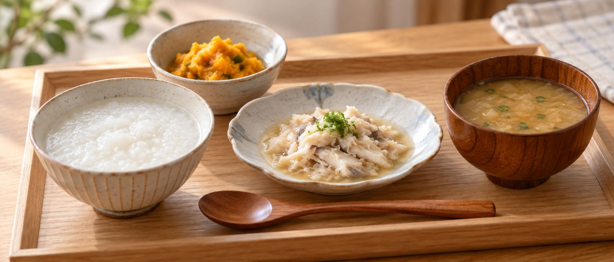

嚥下食のレベル
呼び方が違っても、
段階は対応している。嚥下食のレベル一覧表｜学会分類とUDF区分
病院では「コード2-1」、市販品では「区分3」、宅配食では「ムース食」。同じ段階を別の名前で呼んでいるため、混乱しやすいところです。

どの段階が合うかは、必ず言語聴覚士・医師・管理栄養士が評価して決めます。この一覧表は、指示された段階に合う市販品や宅配食を探すための対応表です。
嚥下食のレベル一覧表
日本摂食嚥下リハビリテーション学会の嚥下調整食分類2021をもとに、主な特徴と一般的な呼び方を並べています。
| 学会分類 | 状態 | 一般的な呼び方 | UDF区分の目安 |
|---|---|---|---|
| 0j | 均質でまとまりのよいゼリー | 嚥下訓練食（ゼリー） | — |
| 0t | とろみのついた液体 | 嚥下訓練食（とろみ水） | — |
| 1j | 均質なゼリー・プリン・ムース | ゼリー食・ムース食 | 区分4 |
| 2-1 | 均質でなめらかなペースト | ペースト食・ミキサー食 | 区分4 |
| 2-2 | やわらかい粒を含むペースト | ペースト食（粒あり） | 区分4 |
| 3 | 形はあるが舌と上あごで押しつぶせる | やわらか食・ソフト食 | 区分3 |
| 4 | かたさ・ばらけやすさに配慮した食事 | 軟菜食・移行食 | 区分1〜2 |
区分の対応は目安です。商品ごとの表示と、担当者の指示を優先してください。
ユニバーサルデザインフードの区分
市販の介護食のパッケージに書かれている区分です。数字が大きいほどやわらかいことを示します。
| 区分 | 名称 | かむ力の目安 | 飲み込む力の目安 |
|---|---|---|---|
| 区分1 | 容易にかめる | かたいものや大きいものはやや食べづらい | 普通に飲み込める |
| 区分2 | 歯ぐきでつぶせる | かたいものや大きいものは食べづらい | ものによっては飲み込みづらい |
| 区分3 | 舌でつぶせる | 細かくてやわらかければ食べられる | 水やお茶が飲み込みづらいことがある |
| 区分4 | かまなくてよい | 固形物は小さくても食べづらい | 水やお茶が飲み込みづらい |
とろみの3段階
| 段階 | 状態の目安 |
|---|---|
| 薄いとろみ | スプーンを傾けるとすっと流れ落ちる |
| 中間のとろみ | スプーンを傾けるととろとろと流れる |
| 濃いとろみ | スプーンを傾けても形がある程度保たれる |
むせやすいのは固形物より水分のことが多いです。飲み物のとろみの段階も、食事と一緒に確認してください。
宅配で選ぶときの見方
- 指示された段階を、商品の表示名に置き換える。上の一覧表で対応を確認してください
- 段階が変わったときに同じサービスで移れるか。複数の段階を扱っているところが便利です
- 見た目が食事の形を保っているか。形があるほうが食欲が落ちにくくなります
- たんぱく質量を確認する。やわらかい食事ほど、たんぱく質が落ちやすくなります
結論だけ知りたい方へ
通常食・ソフト食・ムース食・ピューレ食の4段階を1つのサービスで選べると、段階が変わっても探し直さずに済みます。
段階を選べる宅配食
食楽膳
定期で最大10%引SOMPOケアが運営する管理栄養士監修の冷凍おかず。通常食・ソフト食・ムース食・ピューレ食の4段階に対応しているのが最大の特徴で、噛む力や飲み込む力に合わせて選べます。7食から28食まで食数を調整できます。
食形態と価格を見る ＞健康直球便
定期縛りなし定期購入の縛りがなく、必要なときだけ頼めるのが最大の利点です。糖質・カロリー調整食、たんぱく・塩分調整食、消化にやさしい食、やわらか食、ムース食まで揃っています。150種類以上から選べて、2回目以降は1セット500円引き。
セットを見る ＞